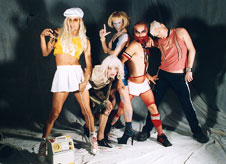

| Sound Venue 16. Marts 2005 |

Dunst holder releasefest
Torsdag den 17. marts holder pladeselskabet Useless Salvation fest i forbindelse med deres nye udgivelse. Men det bliver ingen standard-reception, hvor branchefolk klapper hinanden på ryggen, for den omtalte udgivelse 'Odéur', en compilation med kunstnere fra Dunst-gruppen.
Der vil være live-optrædener fra Puta, Johnny Warehouse, Miss Fish, Dennis Agerblad, Hairwerk og AleXtc og blandt andet Jean Von Baden, Minimal Martin og Geeza vender plader.
Dunst Releaseparty
Culture Box
17. marts, kl. 23-05
Entré: 60 kr.
http://www.soundvenue.com/news.asp?id=3024
Print denne side